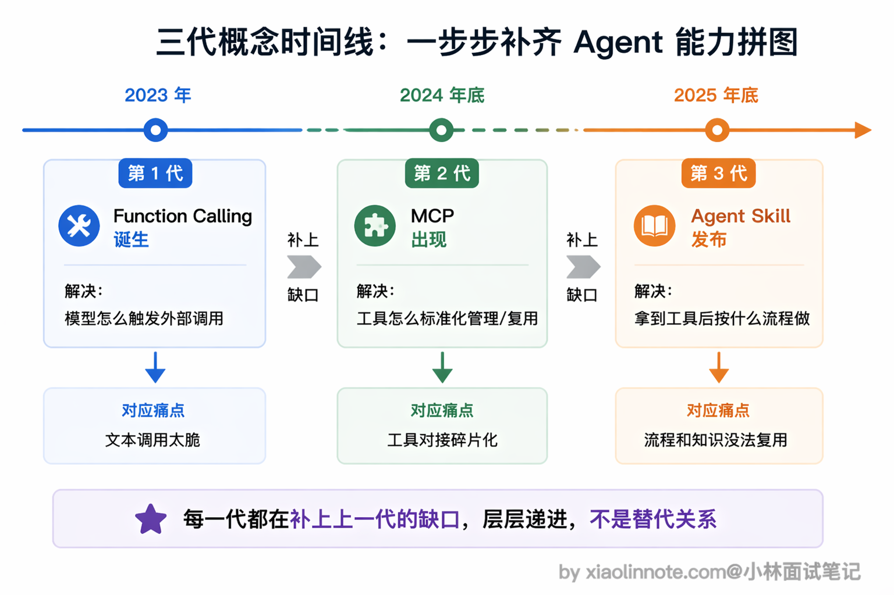
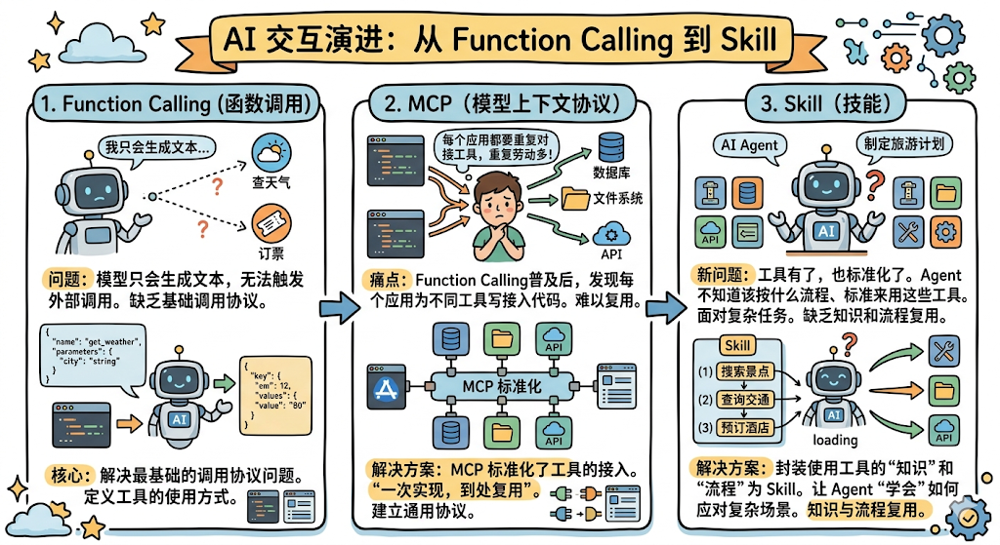
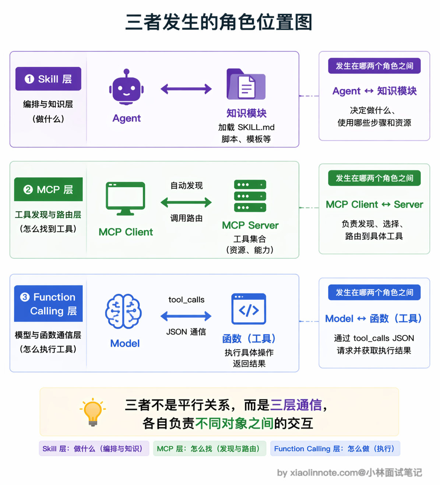
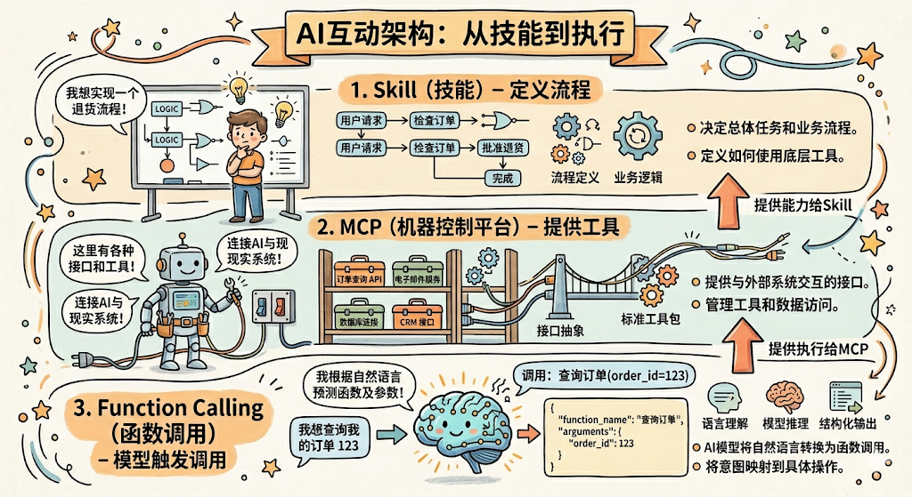
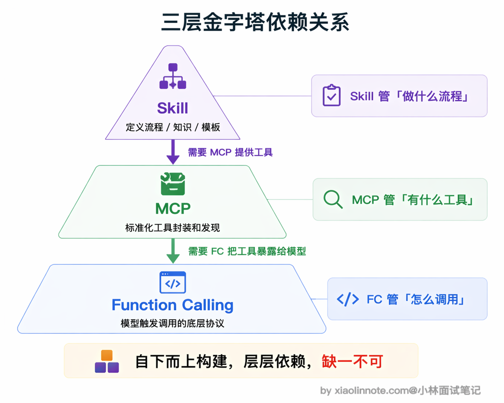
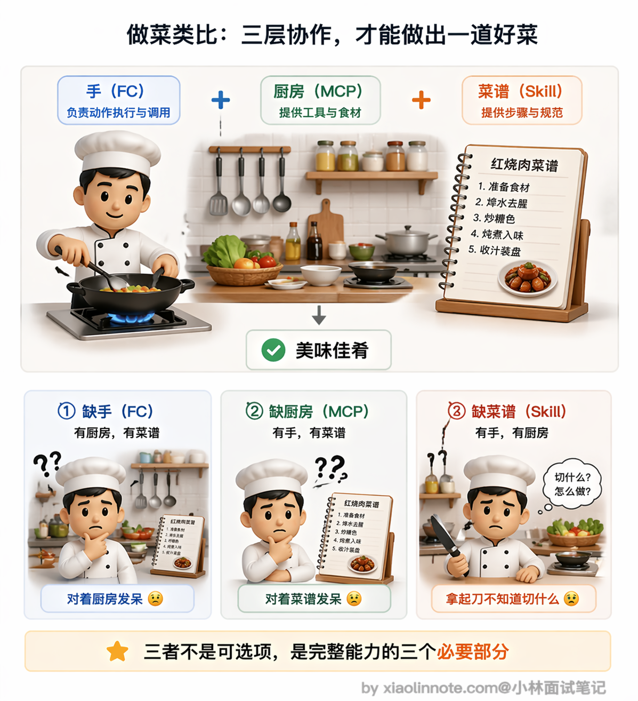
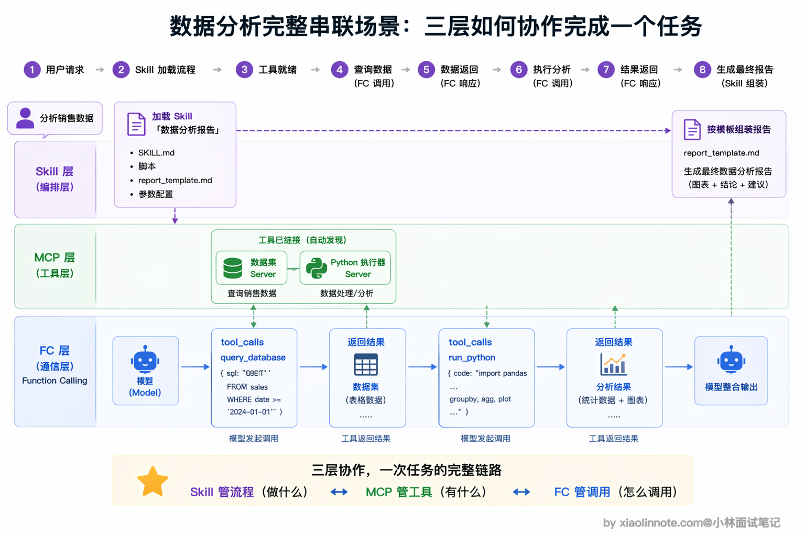

Function Calling、Skill、MCP 这三个有什么区别？
👔面试官：Function Calling、Skill、MCP 这三个概念有什么区别？
🙋♂️我：这三个都是让模型调用外部工具的方式吧？Function Calling 是 OpenAI 的方案，MCP 是 Anthropic 的方案，Skill 也是 Anthropic 的方案，它们是不同时期搞出来的竞争方案。
👔面试官：竞争方案？那你觉得一个系统里只需要选其中一个用就行了？它们是可以互相替代的？
🙋♂️我：也不完全是替代关系……它们应该各有侧重？比如 Function Calling 管函数调用，MCP 管工具标准化，Skill 管流程模板？但我不太确定它们之间有没有层级关系。
👔面试官：你前半段说的方向沾边了，但关键问题是你没搞清楚这三者的层级依赖。它们不是并列的三个方案，而是从底到顶的三层架构：Function Calling 是最底层的调用语言，MCP 在它之上做工具标准化，Skill 在最上层把使用工具完成任务的知识和流程封装成可复用模块。你把每层解决什么问题搞清楚，三者的区别就一目了然了。
好，这段对话踩的雷挺典型的，很多人一上来就把这三个当成平行的竞争方案。下面我把三者的层级关系和各自定位拆开讲清楚。
💡 简要回答
这三个概念在不同层次工作，不是竞争关系。
Function Calling 是最底层的调用协议，解决的是「模型怎么调函数」，模型输出结构化 JSON 告诉程序该调哪个函数、传什么参数。
MCP 在 Function Calling 之上做工具标准化，解决的是「工具怎么暴露给模型」，把数据库、API 这些外部能力封装成标准化服务，一次实现到处复用。
Agent Skill 在最上层做知识和流程的封装，解决的是「拿到工具之后按什么流程完成任务」，把执行步骤、标准、脚本、模板打包成可复用模块。
简单记就是：Function Calling 是语言，MCP 是工具箱，Skill 是操作手册。
📝 详细解析
为什么会有三个概念
这三个概念放在一起确实很容易让人迷惑，但其实它们各自解决的是完全不同层次的问题，是三层架构，不是三个竞争方案。
怎么理解呢？咱们先建立一个直觉感受：Function Calling 是「模型说：我要调这个函数」，MCP 是「工具服务说：我能提供这些函数」，Skill 是「操作手册说：用这些工具按这个流程做」。你看，三句话的主语不一样，说话对象不一样，粒度也不一样，这就是三者的本质差异。
再从时间线来看就更清楚了。
Function Calling 是最先出现的，当时的核心问题是「模型只会生成文本，怎么让它能触发外部调用」，所以 Function Calling 解决的是最基础的调用协议问题。
后来 Function Calling 普及了，大家发现一个新的痛点：每个应用都要自己写代码对接各种工具，数据库一套、文件系统一套、API 又一套，重复劳动太多了。MCP 就是在这个背景下出现的，它把工具的接入标准化了，一次实现到处复用。
再后来，工具有了、接入也标准化了，又冒出了新问题：Agent 有了一堆工具，但面对一个复杂任务，它不知道该按什么流程、什么标准来用这些工具。Skill 就是为了解决这个「知识和流程复用」的问题才诞生的。
三者的出现背景不同，自然解决的是不同层次的东西。

从「谁和谁通信」来看三者位置
理解三者最清晰的切入点是：每个机制发生在哪两个角色之间。

Function Calling 发生在模型和函数之间，是单次调用的格式规范。模型生成 tool_calls JSON 告诉宿主程序「调这个函数、参数是这个」，宿主程序执行完把结果以 tool 消息形式喂回去。这一切发生在单个 Agent 内部，是最底层的「调用语言」，整个系统靠这个让模型触发实际动作。
理解了 Function Calling 是最底层的通信语言，往上一层就是 MCP。它发生在 AI 客户端（MCP Client）和工具服务（MCP Server）之间，是工具的标准化封装协议。Client 连上 Server 后自动发现工具列表，把工具定义转换成 Function Calling 格式喂给模型。所以 MCP 本质上是对 Function Calling 的封装和管理，它让工具从「应用内的代码片段」变成「独立的标准化服务」，一次实现到处复用。
再往上一层就到了 Skill，它发生在 Agent 和知识模块之间。Agent 启动的时候会扫描可用的 Skill 列表，当用户提了一个任务，Agent 自己判断哪个 Skill 和这个任务相关，主动去加载 SKILL.md 里的执行指令、脚本和模板。Skill 的粒度比 MCP 工具粗得多，「代码审查」是一个 Skill，「数据分析报告」是一个 Skill，每个 Skill 内部可能涉及好几个步骤、调用好几个 MCP 工具。

三者的层级依赖关系
搞清楚了三者各自的位置，接下来一个很自然的问题是：它们之间有没有上下级关系？答案是有的，而且层级非常明确。

为什么 Function Calling 在最底层？
因为它是模型触发工具调用的「语言」，没有这套语言，模型就没办法告诉外部「我要调哪个函数、传什么参数」，一切上层能力都无从谈起。
MCP 为什么在它之上？因为 MCP 做的是工具管理和标准化封装，但归根到底，MCP Server 暴露的工具最终还是要通过 Function Calling 的格式传给模型、让模型来触发，所以 MCP 天然依赖 Function Calling。
那 Skill 为什么在最上面？因为 Skill 定义的是使用工具完成任务的流程和标准，Agent 按照 Skill 里的指令去执行，每一步需要调工具的时候，还是得靠 MCP 发现工具、靠 Function Calling 触发调用。
所以完整的链条是：Skill（定义流程）-> MCP（提供工具）-> Function Calling（模型触发调用），从上到下三层，每一层都建立在下一层的基础之上，各司其职。

用做菜来类比就很好理解。
Function Calling 是你的「手」，能拿刀、能点火、能翻锅，这是最基础的操作能力。MCP 是你的「厨房」，里面有各种厨具和食材，刀在抽屉里、调料在架子上、食材在冰箱里，你走进厨房就知道有哪些东西可以用。Skill 是那份「菜谱」，告诉你先热锅凉油、再放姜蒜爆香、然后下主料翻炒、最后调味出锅。
你可以试着想想，跳过其中一层会怎样？
没有手（Function Calling），你站在厨房里、拿着菜谱，什么都做不了，因为你连刀都拿不起来；没有厨房（MCP），就算你有手、有菜谱，家里什么厨具都没有，也只能空着两只手对着菜谱发呆；没有菜谱（Skill），你有手、也有满厨房的厨具，但面对一桌食材不知道该先切什么、后炒什么，只能瞎折腾。三者缺一不可，各管各的层次。

用一个完整故事串联三者
把三者放在同一个场景里感受一下各层分工。用户对 Agent 说「帮我分析最近三个月的销售数据，找出下滑的产品线，给改进建议」。
首先是 Skill 层在起作用。Agent 收到任务后，扫描自己可用的 Skill 列表，发现有一个叫「数据分析报告」的 Skill 和这个任务高度匹配。于是 Agent 加载这个 Skill 的 SKILL.md 正文，读取里面定义的分析流程：第一步从数据库取数据，第二步用 Python 做趋势分析，第三步按模板写分析报告。Skill 就像一份菜谱，把整个任务的步骤和标准安排得明明白白。
然后是 MCP 层在起作用。执行第一步「从数据库取数据」的时候，Agent 的 MCP Client 已经连着数据库 MCP Server 和 Python 执行器 MCP Server，自动知道有 query_database 和 run_python 这些工具可用。MCP 就像厨房，里面的厨具和食材随时可以取用，不需要任何手动配置。
最底层是 Function Calling 在起作用。模型判断需要查数据库，输出 tool_calls: query_database(sql="SELECT product, revenue FROM sales WHERE date >= '2026-01-01'")，MCP Client 把这个请求路由到数据库 Server 执行，拿到结果后模型继续处理。接着模型输出调用 Python 执行器的 Function Calling，对数据做趋势分析。最后 Agent 按 Skill 里定义的报告模板把结果整理成结构化的分析报告返回给用户。
整个流程里 Skill 做流程编排、MCP 做工具管理、Function Calling 做模型和工具的通信，三层分工明确，缺哪层都不完整。

🎯 面试总结
回到开头对话踩的雷，最大的误区就是把 Function Calling、MCP、Skill 当成三个平行的竞争方案。面试回答这道题，第一个必须说清楚的是三者的层级关系：Function Calling 是最底层的调用协议，解决的是「模型怎么触发函数调用」；MCP 在 Function Calling 之上，解决的是「工具怎么标准化封装和发现」；Skill 在最上层，解决的是「拿到工具后按什么流程完成任务」。三层从下到上，各司其职。
第二个关键点是用类比帮面试官快速理解。Function Calling 是「语言」，让模型能说出要调什么函数；MCP 是「工具箱」，把工具标准化打包，随时插拔；Skill 是「操作手册」，教 Agent 用工具箱里的工具按什么流程完成工作。
面试时如果能用一个完整场景把三层串起来就更好了：Agent 按 Skill 定义的流程分步执行，每一步需要调工具时通过 MCP 发现可用工具，模型通过 Function Calling 触发具体的工具调用。这样面试官能看出你不只是背了概念，而是真正理解了三者在系统里怎么协作的。